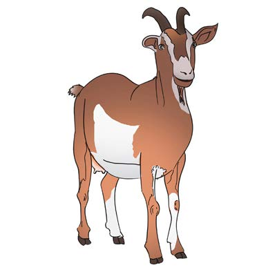
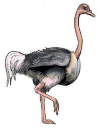
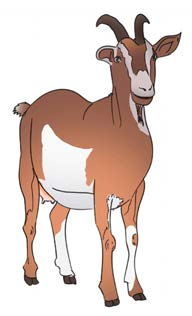
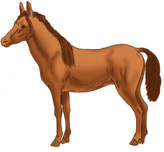

Ninatamka sauti ya herufi mb.
Hii ni picha ya nini?

1. Tamka sauti ya mwanzo ya neno ulilotaja.
2. Taja maneno mengine yanayoanza na sauti hiyo.
Taja majina ya picha hizi:



1. Majina yapi yana sauti za mwanzo zinazofanana?
2. Jina lipi lina sauti ya mwanzo isiyofanana na nyingine?